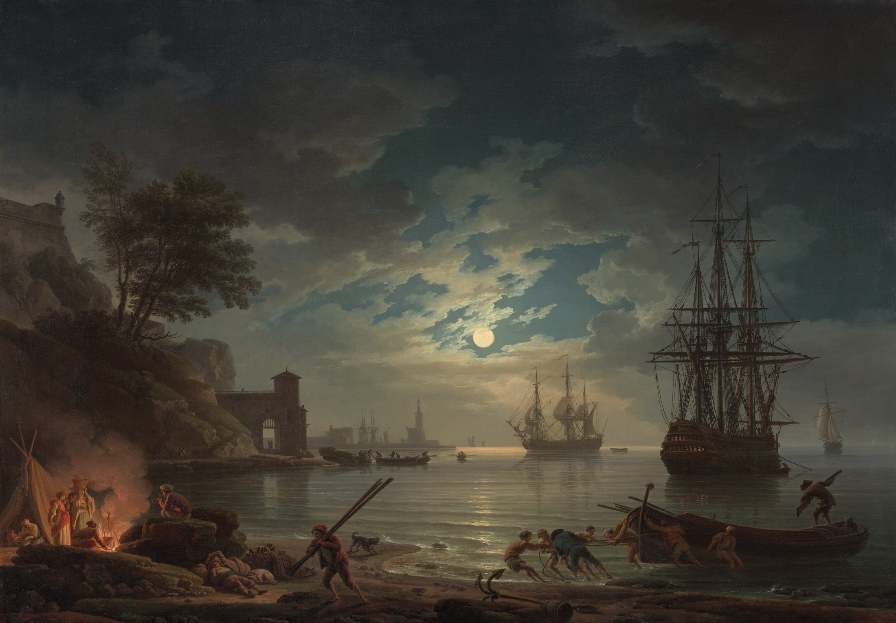

Moonlight opens the water; firelight gathers a few lives.
Shore and ship frame an opening;
the coast leads toward the moon.
Blue-grey meets ochre-orange.
Low saturation; distinct values.
Moonlight spreads; firelight gathers.
Distance answers proximity.
Suggested colours and proportions, not pigment measurements.
Soft clouds meet precise rigging.
Distant ships lose contrast.
An eighteenth-century French
landscape painter who worked in Rome.
Bodies lean into a shared task.
Human effort holds its place in the night.
70% blue-grey + 25% cream + 5% ochre.
Build values; add one warm accent.
Soft broad areas, a few crisp lines.
Suggested colours and proportions, not pigment measurements.
Moonlight · Claude-Joseph Vernet
1772 · Oil on canvas · Accession 2018.13.1
National Gallery of Art, Washington
Rights belong to the original creator; the museum
identifies this image as public domain.
Facts follow museum records; interpretation is independent.